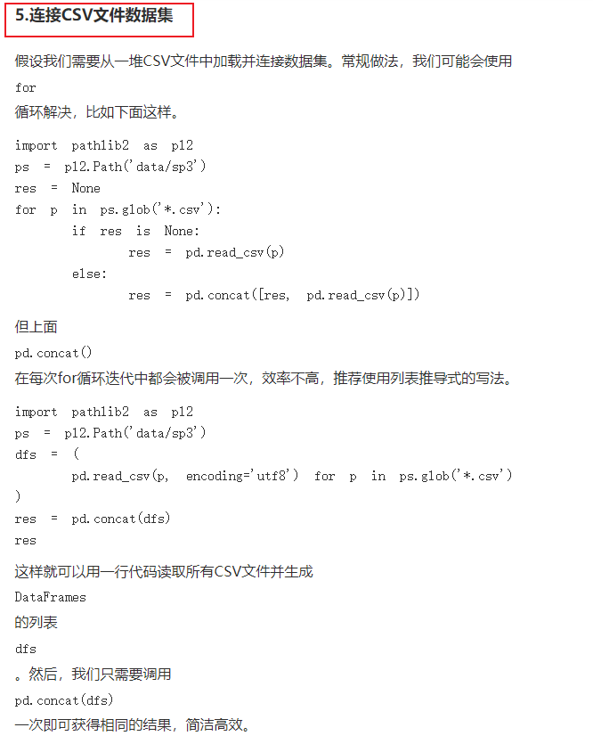

1. 读取文件-----读取部分
import pandas as pd
df = pd.read_table('example.csv',nrows=5) // 前五row
print(df)
2. xml文件解析
import xml.etree.cElementTree as ET
path = ''
def praseXML(filePaths):
global dict_clin
fileCounts = 0
global path
for path in filePaths:
fileCounts += 1
tree = ET.ElementTree(file=path)
root = tree.getroot()
revse(root, dict_clin, fileCounts)
# // 定义为，收集以root为根的所有，不包含root级的
deepth = 0
def revse(root, dict_clin, fileCounts):
global deepth
deepth += 1
# 递归基
if(not root):
return
if(deepth == 3) :
return
#
for node in root:
collectingInformation(node, dict_clin, fileCounts) #收集n同级别的
revse(node, dict_clin, fileCounts)
deepth = deepth -1
3. 合并pd---------> 如何高效？
# 方法一：时间：3h 内存： 3h内存就溢出了
merged_df = pd.DataFrame()
for sample_dic in metadata:
barcode = sample_dic["associated_entities"][0]["entity_submitter_id"]
file_name = sample_dic["file_name"][:]
print("file_name:" )
print(file_name)
print("barcode:" )
print(barcode)
sample_df = pd.read_table(sample_path + '\\' + file_name, names = [barcode], skiprows=[0,2,3,4,5]) #【1】频繁创建对象
merged_df = pd.concat([merged_df, sample_df], axis = 1) #【2】 频繁合并 【3】merged_df增长速度非常快，不知道为啥？几十个G
print("sample_df:" + str(sys.getsizeof(sample_df)/1024/1024) + " merged_df:" + str(sys.getsizeof(merged_df)/1024/1024))
merged_df.to_csv(root_path + '\\Results.csv')
print("Results are saved to: " + root_path + '\\Results.csv')
# 方法二：时间：4min 内存： 4G
dfs = (pd.read_table(sample_path + '\\' + sample_dic["file_name"][:], skiprows=[0,2,3,4,5]) for sample_dic in metadata) #【5】 连续读取，不存在 频繁合并 【6】内存上：dfs最大值，就是多个文件字节之和
res = pd.concat(dfs)
res.to_csv(root_path + '\\Results.csv')
------------------------------> 总之，两种方法，在时间和空间上都是天差地别的：
时间上：方法一多了（1）频繁创建对象 （2）频繁合并操作
空间上：：方法一多了（1）频繁创建对象 （2）merged_df大小急速增加（TODO：不知道为啥）
参考：
https://www.360doc.com/content/23/0716/10/1088733714_1088733714.shtml

4. 列名----->升序排序
# 对列名进行升序排序
unstranded_Results_df = unstranded_Results_df.sort_index(axis=1)
5. 截取pd
5.1. 自定义规则筛选列 ------> 非常优，可扩展性非常强
筛选unstranded_Results_df中 列索引 columns 包含 表groupe_df['bcr_patient_barcode'] 列中文字（包含任意一个都行）
filtered_columns_df = unstranded_Results_df.filter(items=[col for col in unstranded_Results_df.columns if hasWantGroupOrNot(groupe_df['bcr_patient_barcode'], col)])
#自定义规则
def hasWantGroupOrNot(groupe_df_serise, column_name):
for barcode in groupe_df_serise:
if barcode in column_name:
return myRem(barcode)
return False
5.2. 选取列
截取 ['gene_id', 'gene_name'] 两列
baoliu_df = unstranded_Results_df[['gene_id', 'gene_name']]
5.3. 删除某一列
# 删除 gene_name 列
clin_test_grouped_df.drop('gene_name', axis=1, inplace=True)
5.4. 筛选行
精髓：构造group_condition = [True, False, ............]
# 测试组: 根据条件进行分组
group_condition = ((df['breast_carcinoma_progesterone_receptor_status'] == 'Negative') & (df['breast_carcinoma_estrogen_receptor_status'] == 'Negative')
& ( ( (df['lab_proc_her2_neu_immunohistochemistry_receptor_status'].isnull()))|
(df['lab_proc_her2_neu_immunohistochemistry_receptor_status'] == 'Equivocal') |
(df['lab_proc_her2_neu_immunohistochemistry_receptor_status'] == 'Indeterminate') |
(df['lab_proc_her2_neu_immunohistochemistry_receptor_status'] == 'Negative'))
& ( ( (df['lab_procedure_her2_neu_in_situ_hybrid_outcome_type'].isnull())) |
(df['lab_procedure_her2_neu_in_situ_hybrid_outcome_type'] == 'Negative')))
test_grouped_df = df[group_condition]
6. 转置T
7. 生物信息分析---Python版的DESeq2
7.1. R语言版DESeq2：
https://naiv.fun/Misc/TCGA.html
图：最终结果

----------------> 用python版，可以做出同样结果
7.2. Python版的DESeq2
参考：https://cloud.tencent.com/developer/article/2228284 Python版的DESeq2尝鲜
7.3. 画图
https://www.jianshu.com/p/a19e099de544 Python版RNA-seq分析教程：DEseq2差异表达基因分析
8. python爬虫
参考：
https://blog.csdn.net/lemonbit/article/details/114957452?utm_medium=distribute.pc_relevant.none-task-blog-2~default~baidujs_baidulandingword~default-9-114957452-blog-128834558.235^v40^pc_relevant_anti_vip&spm=1001.2101.3001.4242.6&utm_relevant_index=12 40行Python代码一键把html网页保存为pdf，太方便了！
https://blog.csdn.net/Galoa/article/details/79873163 Python爬虫: 单网页 所有静态网页 动态网页爬取
https://pythonjishu.com/yophpzdhyczaznu/ Python实现爬取需要登录的网站完整示例